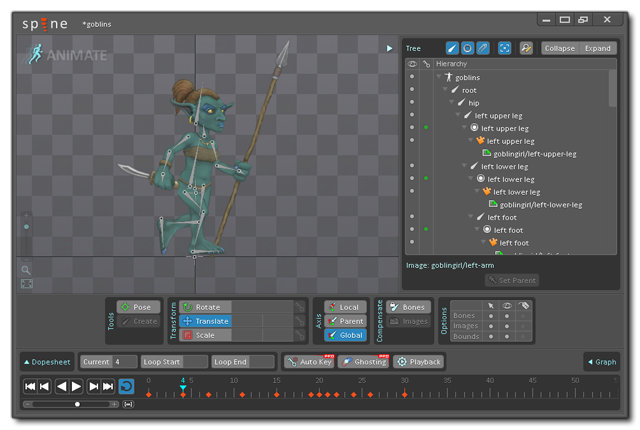
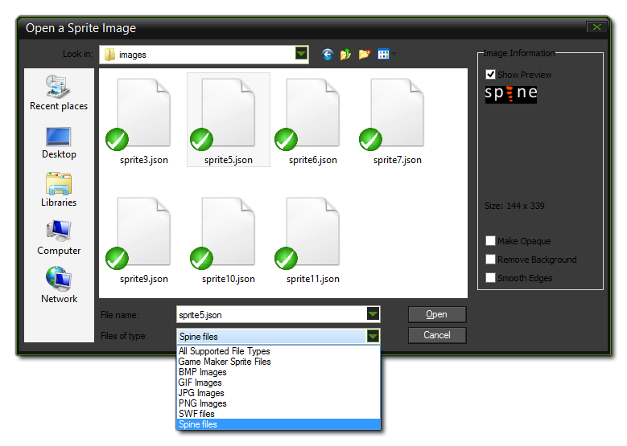
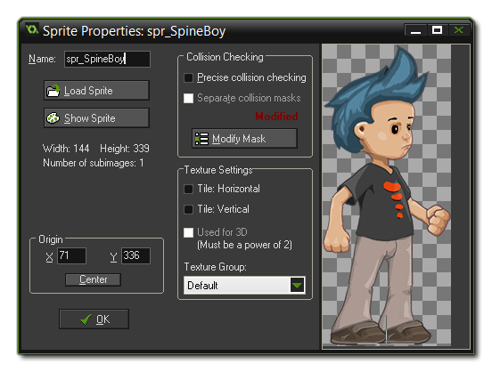

A sprite made using skeletal animation, is one in which a base "skeleton" has been created and animated using key-frames to move the component parts of the skeleton over time. This skeleton is then skinned from a texture atlas and the resulting animation exported in one of many file types. Gamemaker:Studio permits you to import this type of sprite as long as it has been exported as a *.json format file and has the correctly associated texture atlas file (*.atlas) and image file (as a *.png) in the same directory.
IMPORTANT: GameMaker: Studio only supports a single texture atlas per sprite.
NOTE: This feature currently only supports files created using the program Spine.

Currently GameMaker: Studio can only import vector images
from JSON format files made by the program Spine,
however the way to import them into the program is almost identical
to that for adding a normal bitmap image. To add a skeletal
animation, you need to create a new sprite, which will bring up the
standard Load
Sprite dialogue, but make sure that you have selected
*.json from the file filter at the bottom. 
Hitting the "load" button will add the skeletal animation to the
resource tree as a sprite, with a progress bar being shown as the
file is processed. Note that, depending on the complexity of the
file, this may take a moment or two. When processing has finished
you'll be returned to the sprite properties dialogue, which will
now look like this: 
Once you have imported the animation, you can set the collision
properties, but note that you are limited here to simply using
precise collisions or bounding box collisions, and that the
collision data for a skeletal animation is explicitly taken from
the data provided. GameMaker: Studio does not generate any
collision mask if the data is missing from imported file, meaning
you simply won't get working collisions if the masks are not set
correctly in the program used to create the image being
imported.
NOTE: Due to the complexity of skeletal animations, the preview image shown in the sprite editor is not intended to accurately represent your animation, but rather give you a simple image that represents the animation for visualising in the room editor.
Unlike bitmap sprites, the imported skeletal animation sprite
cannot be modified in the editor in any way, but there are a number
of functions available within the GameMaker Language (GML) which
can be used to change skins, set properties, and control other
aspects of the animation.
There are a number of things that you should be aware of when
importing skeleton animation sprites, with the most important being
that some of the sprite drawing and sprite management functions are
not supported for technical reasons, particularly those draw
functions that draw only part of a sprite, or that "skew" the
position in some way (see the individual
draw_sprite_*() functions for exact details of which). However
the basic sprite drawing functions are fully supported as are the
built in
sprite variables. Apart from these functions and variables, you
can also set and change animation properties using special
skeleton_* functions, which are listed and explained in
the reference section on
Skeletal Animations.